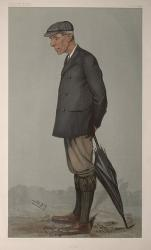
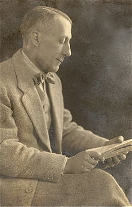

|
|
【神按計劃行事】 |
|
1 God is working his purpose out
2 From utmost east to utmost west,
3 March we forth in the strength of God,
4 All we can do is nothing worth
|
時光一年一年過去，神按祂計劃行事。 |
|
God is Working His Purpose Out https://hymnary.org/hymn/CBH1900/page/41
|
|
|
|
|


https://youtu.be/6uL59Mh_WOQ -
BENSON-GOD IS WORKING HIS PURPOSE OUT https://youtu.be/Iiuxet4pJ-c -
God Is Working His Purpose Out - Christian Hymn & Spiritual Song Lyrics with
Orchestral backing music.
https://youtu.be/Kdh3XbvRgrM
| Text: | God Is Working His Purpose Out |
| Author: | A. C. Ainger |
| Tune: | PURPOSE |
| Composer: | Martin Shaw |
| Short Name: | Arthur Campbell Ainger |
| Full Name: | Ainger, Arthur Campbell, 1841-1919 |
| Birth Year: | 1841 |
| Death Year: | 1919 |
Ainger, Arthur Campbell,

M.A., son of the Rev. F. A. Ainger, incumbent of Hampstead, Middlesex; born in 1841, educated Trinity College, Cambridge, 1st Class Class. Trip. 1864, Assistant Master at Eton 1864-1901. Author of Eton Songs, 1901-2; Carmen Etonense, Vale, &c, and joint author with H. G. Winkle, M.A., of an English-Latin Verse Dictionary. Mr. Ainger's hymns in common use are the following :—
| Short Name: | Martin Shaw |
| Full Name: | Shaw, Martin, 1875–1958 |
| Birth Year: | 1875 |
| Death Year: | 1958 |
Martin F. Shaw
was educated at the Royal College of Music in London and was organist and choirmaster at St. Mary's, Primrose Hill (1908-1920), St. Martin's in the Fields (1920-1924), and the Eccleston Guild House (1924-1935). From 1935 to 1945 he served as music director for the diocese of Chelmsford. He established the Purcell Operatic Society and was a founder of the Plainsong and Medieval Society and what later became the Royal Society of Church Music.
Author of The Principles of English Church Music Composition (1921), Shaw was a notable reformer of English church music. He worked with Percy Dearmer (his rector at St. Mary's in Primrose Hill); Ralph Vaughan Williams, and his brother Geoffrey Shaw in publishing hymnals such as Songs of Praise (1925, 1931) and the Oxford Book of Carols (1928). A leader in the revival of English opera and folk music scholarship, Shaw composed some one hundred songs as well as anthems and service music; some of his best hymn tunes were published in his Additional Tunes in Use at St. Mary's (1915).
Bert Polman
| Text Information | |
|---|---|
| First Line: | God is working his purpose out |
| Title: | God Is Working His Purpose Out |
| Author: | A. C. Ainger (1894) |
| Meter: | Irregular |
| Language: | English |
| Publication Date: | 1985 |
| Scripture: | ; ; |
| Topic: | God: Eternity and Power; Purpose; Warfare, Spiritual |
| Tune Information | |
|---|---|
| Name: | PURPOSE |
| Composer: | Martin Shaw (1915) |
| Meter: | Irregular |
| Key: | f minor |
| Copyright: | Music from Enlarged Songs of Praise; used by permission of Oxford University Press |
Martin Shaw (composer) 1875–1958
|
Martin Shaw
|
|
|---|---|
|
 |
|
| Born |
9 March 1875
London, England
|
| Died |
24 October 1958 (aged 83)
Southwold, England
|
| Resting place | St Edmund's Church, Southwold, England |
| Occupation |
|
| Spouse(s) |
Joan Cobbold
(m. 1916) |
| Relatives |
Geoffrey Shaw (brother) Sebastian Shaw (nephew) Mont Campbell (grandson) |
{kind=link}
Martin Edward Fallas Shaw OBE FRCM (9 March 1875 – 24 October 1958) was an English composer, conductor, and (in his early life) theatre producer. His over 300 published works include songs, hymns, carols, oratorios, several instrumental works, a congregational mass setting (the Anglican Folk Mass), and four operas including a ballad opera.
Biography[edit]
Shaw delighted in describing himself as a cockney,[1] a title he could claim under Samuel Rowlands' definition of one born within the sound of the Bow Bells.[2] Born 9 March 1875,[citation needed] he was the son of the Bohemian and eccentric[3] James Shaw, composer of church music and organist of Hampstead parish church. He was the elder brother of the composer and influential educator Geoffrey Shaw and the actor Julius Shaw (born c. 1882, Clapham, Surrey now South West London), whose career was cut short by the First World War – he was killed in March 1918. He studied under Charles Villiers Stanford at the Royal College of Music, together with a generation of composers that included Gustav Holst, Ralph Vaughan Williams, and John Ireland. He then embarked upon a career as a theatrical producer, composer and conductor, the early years of which he described as "a long period of starving along".[4] However, he began his career as an organist, serving at Emmanuel Church, West Hampstead, from 1895 to 1903.
With Gordon Craig, he founded the Purcell Operatic Society in 1899,[5] dedicated to reviving the music of Henry Purcell and other English composers of the period, many of whose works had fallen into long neglect. Their first production in 1901 was Purcell's Dido and Aeneas, at the Hampstead Conservatoire. This was well received and transferred to the Coronet Theatre, where it played alongside Ellen Terry's production of Nance Oldfield. It was also Craig's first outing as stage director. The POS's other productions were The Masque of Love from Purcell's semi-opera, Dioclesian (1901) and Handel's Acis and Galatea (1902). In 1903, Martin joined Ellen Terry's company at the Imperial Theatre, where he composed and conducted the music for productions of The Vikings and Much Ado About Nothing, also directed by Craig, Ellen Terry's son.[4]
He proposed to Edith Craig, Craig's sister, in 1903 and was accepted. Edy was a successful, prolific but now largely forgotten theatre director, producer, costume designer and early pioneer of the women's suffrage movement in England. The marriage was prevented by Ellen Terry, out of jealousy for her daughter's affection, and by Christabel Marshall (Christopher St John), with whom Edith lived from 1899, according to Michael Holroyd in his book A Strange Eventful History (2008).[6] A thinly fictionalised account of this episode appears in St John's autobiographical novel Hungerheart: The Story of a Soul (1915).
Shaw then toured Europe as conductor to Isadora Duncan, extensively described in his 1929 autobiography Up to Now published by Oxford University Press.[4][7] During this period he gave music lessons and took posts as organist and director of music, first at St Mary's, Primrose Hill, where his vicar was Percy Dearmer 1908 or 1909 – 1920, later at St. Martin-in-the-Fields, London 1920 – 1924. He was also master of music at the Guildhouse, London.
After his marriage to Joan Cobbold in 1916, he settled down to family life. The couple had three children: John Fallas Cobbold Shaw (1917–1973), Richard Brinkley Shaw (1920–1989), and Mary Elizabeth Shaw (1923–1977).[8] Under the influence of his wife, and faced with the need to support his family, church music gradually became the focus of his life and work.[citation needed] In 1918 he co-founded the League of Arts, the Royal School of Church Music and was an early organiser of hymn festivals. He did much editorial and executive work in connection with popularising music, the encouragement of community singing and raising standards of choral singing in small parish churches.
In 1932, Shaw received the Lambeth degree of Doctor of Music. He was appointed an OBE in 1955 and was made a Fellow of the Royal College of Music (FRCM) in 1958.[5]
He died on 24 October 1958.
His nephew was the actor Sebastian Shaw, who played the unmasked Darth Vader and the ghost of Anakin Skywalker in Return of the Jedi (1983).
Works[edit]
His published works include over 100 songs (some of them for children), settings for soli, chorus and orchestra of Laurence Binyon's Sursum Corda, Eleanor Farjeon's The Ithacans, John Masefield's The Seaport and her Sailors; a ballad opera by Clifford Bax, Mr Pepys, and Water Folk, written for the Worcester Music Festival held in September 1932. He composed the music for T.S. Eliot's pageant play, The Rock, (performed at the Sadler's Wells Theatre in May 1934), making him the only composer Eliot ever allowed to set his words to music. He later became the first editor of National Anthems of the World, published after his death.
His oratorio The Redeemer, for SATB soloists, chorus and full orchestra, was first broadcast by the BBC in March 1945. His cantata God's Grandeur, to words by Gerard Manley Hopkins, was composed for the first Aldeburgh Festival, receiving its first performance in the same concert as the premiere of Britten's St Nicholas.[4]
Working with Percy Dearmer, Martin was music editor of The English Carol Book (1913, 1919) and, with Ralph Vaughan Williams, of Songs of Praise (1925, 1931) and The Oxford Book of Carols (1928). His tune Little Cornard is sung to Hills of the North Rejoice, and Marching is sung to Through the Night of Doubt and Sorrow. While doing research for the English Hymnal (1906) in the British Library, he came upon the traditional Gaelic hymn-tune Bunessan[citation needed] in L. McBean's Songs and Hymns of the Gael, published in 1900. However, the tune was not included in the English Hymnal. It was used instead in the second edition of Songs of Praise (1931), set to the poem Morning Has Broken, which Martin Shaw commissioned specially from his old friend Eleanor Farjeon. This tune and words became a No. 1 hit for Cat Stevens in 1972. Martin Shaw also noted down the Czech carol Rocking and included it in The Oxford Book of Carols.
Archive[edit]
The Martin Shaw Archive was acquired by the British Library in February 2011. It includes his music scores and correspondence between him and his wife Joan. As well as letters from his friends Gustav Holst and John Ireland, letters from the world of literature and the arts are very widely represented, including Albert Schweitzer, Nancy Astor, Paul Nash, W. B. Yeats and his nephew Sebastian Shaw. The archive also contains major correspondence from Ralph Vaughan Williams and the Christian feminist and campaigner Maude Royden, with whom Martin established The Guildhouse Fellowship in Eccleston Square, London.[9]
List of works[edit]
The following is a list of Shaw's theatrical productions, music for plays, cantatas and songs. Authors or collaborators are listed after the name of the production or piece in brackets. Publishers or performance venues are listed where known. A fuller list of works including editorial work, instrumental pieces, and sacred music can be seen at Musicweb International[10]
Theatrical work[edit]
As producer of the Purcell Operatic Society, created by Shaw with Edward Gordon Craig[11][12][13]
- 1900: conductor and producer: Dido and Aeneas (Purcell) – Hampstead Conservatoire
- 1901: conductor and producer: The Masque of Love (Purcell) – Coronet Theatre, Notting Hill
- 1902: conductor and producer: Acis and Galatea (Handel, libretto by John Gay) – Great Queen Street Theatre
Productions at the Imperial Theatre
- 1902: Music Director and conductor: Bethlehem, a Morality Play (Laurence Housman, music by Joseph Moorat) – at the Imperial Institute[14][15]
- 1903: composer and conductor: The Vikings (Ibsen) – Imperial Theatre
- 1903: composer and conductor: Much Ado About Nothing (Shakespeare) – Imperial Theatre[16]
Dramatic music[edit]
1911 – 1915 with Mabel Dearmer and the Morality Play Society
- 1911 The Soul of the World (premiere at Imperial Institute 1 Dec.)[17] – Joseph Williams
- 1912 The Dreamer – The Biblical story of Joseph –
- 1913 The Cockyolly Bird (premiere at the Court Theatre, Thursday, 1 Jan 1914[18]) – Curwen (published 1930)
- 1914 Brer Rabbit and Mr Fox, a musical frolic (premiere at the Little Theatre) – Joseph Williams
with George Calderon and William Caine
- 1912 The Brave Little Tailor[19]
1926 – 1939
- 1926 Mr Pepys, a Ballad Opera on the life of Samuel Pepys (Clifford Bax) – Cramer[20]
- Waterloo Leave, a Ballad Opera (Clifford Bax) – Maddermarket, Ipswich
- 1926 Granite (Clemence Dane) premiered at Ambassadors Theatre, with Sybil Thorndike
- 1929 The Silver Tassie (Sean O'Casey); Plainsong and songs for Act II – Apollo Theatre
- 1929 Easter (John Masefield)
- 1931 The Thorn of Avalon, an Opera for Toc H (Barclay Baron) – Crystal Palace
- 1932 Philomel (Jefferson Farjeon, lyrics by Clifford Bax) premiered at Ambassadors Theatre, starring Phyllis Neilson-Terry and Arthur Wontner[21]
- 193? At the Sign of the Star an Opera for Toc H – Royal Albert Hall
- 1934 The Rock, a Choral Pageant (T.S. Eliot) – Sadlers Wells
- Judgement at Chelmsford (Charles Williams) – Scala
- 1936 Master Valiant (Barclay Baron for Toc H 21st Birthday) at Crystal Palace – OUP
- 1937 The Six Men of Dorset (Miles Malleson)
- 1939 Thursday's Child (Christopher Fry) – Royal Albert Hall
Children's plays and pageants 1916 – 1939
- 1916 The Pedlar (from Shakespeare) 6 songs, 2 dances – Evans Bros.
- 1918 Fools and Fairies (from A Midsummer Night's Dream) – Evans
- 1925 Children's Play: The Magic Fishbone (Joan Cobbold) – Curwen
- 1925 A Christmas Pageant (words selected by Joan Cobbold) – Curwen
- 1928 Pageant: The Months (Christina Rossetti, dramatised by Joan Cobbold) – Cramer
- 1929 Christmas mime: At the Sign of the Star (Barclay Baron) – OUP
- 1929 Musical Play: The Whispering Wood (Rodney Bennett) –
- 1931 The Green Sky: a children's play (Joan Cobbold) – OUP
- 1936 The Travelling Musicians (arr. Joan Cobbold, from the Brothers Grimm) – Novello
- 1939 Thursday's Child (Christopher Fry) – Cramer
Cantatas and song sequences[edit]
- 1910 Song Sequence: Fantastic Trio for voice, sung by the Albion Trio at the (Aeolian Hall)[22]
- 1931 Cantata: The Seaport and her Sailors (John Masefield) – Cramer
- 1931 Song Sequence: The Ungentle Guest (Herrick, Drayton & Clifford Bax) – for Baritone, Harp and String Quartette – Cramer
- 1932 Song Sequence: Water Folk (Heine) for voice, strings, quartette and pianoforte – Cramer
- 1933 Cantata: The Ithacans (Eleanor Farjeon) [tenor, chorus and orchestra] – Cramer
- 1933 Cantata: Sursum Corda (Laurence Binyon) [chorus and orchestra] – Novello
- 1935 Cantata: This England (Shakespeare) – OUP
- 1945 Cantata length Oratorio: The Redeemer (ed. Joan Cobbold) [soli, chorus and orchestra] – Joseph Williams
- 1950 Cantata: The Changing Year (ed. Joan Cobbold) – Joseph Williams
- 1953 Cantata: The Changing Year [arr.for flute and strings D. Shaw] – J Williams
Songs[edit]
1898–1904
- 1898 Berceuse (Diana Gardiner) – The Dome.
- 1899 The Song of the Palanquin Bearers (Sarojini Naidu) – The Page
- 1902 The Land of Heart's Desire (WB Yeats) – Curwen
- 1903 E'en as a lovely Flower (Heine) – The Page
- 1904 Hymn To Diana [2 part song] (Ben Jonson) – Novello
- 1904 Over the Mountains (traditional) [2 part song] – Novello
- 1904 The Jolly Shepherd (John Wootton) [S.A., p.f.] – Joseph Williams
- 1904 The Fairies Escape [SS song for female voices, p.f. acc.] – Joseph Williams
- 1904 Weep you no More Sad Fountains [S.A. with p.f. acc.] – Joseph Williams
1913–1920
- 1913 England, My England (W.E. Henley) [chorus for TTBB] – Boosey
- 1914 6 Songs of War published by Humphrey Milford at Oxford University Press (OUP) 1: Battle song of the Fleet at Sea (Stella Callaghan) 2: Called Up (Dudley Clark) 3: England for Flanders (C.W. Brodribb) 4: Erin United (C.W. Brodribb) 5: Carillons (tr. From the French by D. Bonnard) 6: Venizel (W.A.Short)
- 1914 The Cavalier's Escape (W Thornbury) – Stainer and Bell
- 1914 Song of the Callicles (Matthew Arnold) 3 part song for female voices [SSA] – Joseph Williams
- 1914 Conrad Suck-a-Thumb – in Geoffrey Shaw's Struwelpeter – Curwen
- 1915 God Save the King with Faux Bourdon – Curwen
- 1915 Cuckoo (traditional, 2nd verse by MS) – Curwen
- 1915 Song: Clare's Brigade (Stephen Gwynn) – Humprey Milford at OUP
- 1915 Four Pastoral Songs for Soprano and Contralto – Curwen 1: County Guy 2: Lubin 3: Sylvia Sleeps 4: Sylvia Wakes
- 1916 A Christmas Song (Eugene Field) – Evans
- 1916 Ships of Yule [unison song] – Evans
- 1917 Lullaby (Christina Rossetti) – Curwen
- 1917 Under the Greenwood Tree – Curwen
- 1917 Sigh No More Ladies (Shakespeare) – Curwen
- 1917 Trip and Go (traditional) – Curwen
- 1917 Orange and Green (arr. Of AP Graves words to Lillibulero) – Curwen
- 1917 Six Songs published by Curwen: 1: Bird or Beast (Christina Rossetti) 2: Easter Carol (Christina Rossetti) 3: The Land of Heart's Desire (Yeats) 4: Over the Sea (Christina Rossetti) 5: not currently known 6: Summer (Christina Rossetti)
- 1917 Song of the Palanquin Bearers republished – Curwen
- 1917 Lied der Sänftentrager [German translation of Palanquin Bearers] – Universal Edition
- 1918 Serenade (Diana Gardner) – Curwen
- 1918 Two Songs from Alice in Wonderland (Lewis Carroll) – (Evans: 3rd Bk of the School Concert) 1: You are Old Father William 2: Will You Walk a Little Faster
- 1918 The Bird of God (Kingsley) [2 part song] – Arnold
- 1918 The Frogge and the Mouse (Deuteromelia) [2 part song] – Curwen
- 1919 Bab-lock-Hythe (Laurence Binyon) – Curwen
- 1919 Brookland Road (Rudyard Kipling) – Curwen
- 1919 Child of the Flowing Tide (Geoffrey Dearmer) – Chappell
- 1919 Down by the Salley Gardens (W.B. Yeats) – Curwen
- 1919 Heffle Cuckoo Fair (Rudyard Kipling) – Curwen
- 1919 Love Pagan (Arthur Shirley Cripps) – Curwen
- 1919 Old Mother Laidinwool (Rudyard Kipling) – Curwen
- 1919 Pity Poor Fighting Men (Rudyard Kipling) – Curwen
- 1919 Refrain (Arthur Shirley Cripps) – Rogers
- 1919 Stave of Roving Tim (George Meredith) – Curwen
- 1919 The Egg Shell (Rudyard Kipling) – Curwen
- 1919 The Bubble Song (Mabel Dearmer) – Chappell
- 1920 The Knights Song (Lyon) – Enoch
- 1920 Love me, I love you (Christina Rossetti) – Curwen
- 1920 Charity (Christina Rossetti) – Curwen
- 1920 Lullaby (Christina Rossetti) – Curwen
- 1920 The Ferryman (Christina Rossetti) – Curwen
- 1920 Up the Airy Mountains (William Allingham) [2pt song] – Augener; Edward Arnold
- 1920 Invictus (W.E. Henley) – Curwen
- 1920 O Falmouth is a Fine Town (W.E. Henley) – Curwen
1921–1930
- 1921 Annabel Lee (Edgar Allan Poe) – Cramer
- 1921 When Daisies Pied (Shakespeare) – Curwen
- 1922 At Columbine's Grave (Bliss Carmen) – Cramer
- 1922 Blow, Blow thou Winter Wind (Shakespeare) [unison] – Edward Arnold
- 1922 Butterflies (Mabel Dearmer) [unison song] – Curwen
- 1922 Crockle and Quackle (Darnley) [2pt. Song] –
- 1922 Full Fathom Five (Shakespeare) – Cramer
- 1922 I know a Bank (Shakespeare) [unison] – Cramer
- 1922 Old Clothes and Fine Clothes (John Pride) – Cramer
- 1922 The Cockyolly Song (Mabel Dearmer) [unison song] – Curwen
- 1922 The Merry Wanderer (Shakespeare) – Cramer
- 1922 Two songs of Spring – Boosey: 1: Through Softly Falling Rain (Sybil M.Ruegg) 2: The Herald (Geoffrey Dearmer)
- 1923 I Cannot eat but little Meat (arr. For TTBB) – Curwen
- 1923 I Know a Bank (Shakespeare) [SS] – Cramer
- 1923 London Town (John Masefield) – Cramer
- 1923 Over Hill Over Dale (Shakespeare) – Cramer
- 1923 Peaceful Slumb'ring (Cobbe) [arr. Tenor Solo & TTBB] – Curwen
- 1923 Ships of Yule (Eugene Field) [unison] – Curwen
- 1923 The Grand Panjandrum – Novello
- 1923 The Little Vagabond (William Blake, cover illustration by Paul Nash) – Cramer
- 1923 Tides (John Pride) – Cramer
- 1923 Two Nursery Rhymes – Evans Bros
- 1923 With a voice of singing [SATB] - Curwen
- 1924 The Dip (Judge Parry) – Cramer
- 1924 Wood Magic (John Buchan) – Cramer
- 1924 Glad Hearts Adventuring (Macdonald), the Girl Guide Anthem – Cramer
- 1924 Cargoes (John Masefield) unison 1st published in 'Music and Youth', (2/- song) – Cramer
- 1924 Two Water Songs – Cramer 1: The Little Waves of Breffney (Eva Gore-Booth) 2: The Rivulet (L. Larcom)
- 1924 I know a Bank (Shakespeare) [Duet] – Cramer
- 1925 Old Clothes and Fine Clothes (John Pride) – Braille
- 1925 The Conjuration (from the Chinese poem of Hung-So-Fan) 2 keys – Cramer
- 1925 The Caravan (W.B. Rands) – Cramer
- 1925 The Pioneers (Walt Whitman) unison song – Cramer
- 1926 Bridgwater Charter Song (Bruce Dilks) – Cramer
- 1926 March (L. Larcom) [unison] – OUP
- 1926 May Merry Time (Darley) 2pt song – OUP
- 1926 Song & Mime: The Mummers (Eleanor Farjeon) unison – Evans Bros.
- 1926 Trees (E. Nesbit) – Cramer
- 1927 Avona (DB Knox) – Cramer
- 1927 Budmouth Dears (Thomas Hardy) [SSCCTTBB] – Curwen
- 1927 Gather up your Litter (Eleanor Farjeon) – Cramer
- 1927 Ladybird (Mrs Montgomery) [unison] – Cramer
- 1927 Lament: Johnny Braidislee from Ionica – Cramer
- 1927 Little Trotty Wagtail (John Clare) [Unison] – Cramer
- 1927 Over the Sea with a Soldier (Harold Boulton) – Cramer
- 1927 St George's Day (arr. D.J. Clarke, words Geoffrey Dearmer) [Unison] – Cramer
- 1927 The Accursed Wood (Harold Boulton) [Unison] – Cramer
- 1927 Up Tails All (Kenneth Grahame) [Unison] – Cramer
- 1927 The Mountain and the Squirrel (Emerson) [Unison] – Cramer
- 1928 Service (words selected by Rudyard Kipling) [Unison] – Cramer
- 1929 Song of the Music Makers (Rodney Bennett) Music and Youth (Jan) – Cramer
- 1929 Two Shakespeare Songs: – Cramer 1: Come Away Death 2: When that I was
- 1929 Sea Roads (Harold Boulton) [Unison] – Boosey and Hawkes [Winthrop Rogers]
- 1930 Songs: New Singing Games (Cobbold) – Cramer 1: White Owl 2: Flower Game 3: Naughty Children 4: Walking Down the Lane
- 1930 O Land of Britain (Stuart Wilson) [Unison] – Cramer
- 1930 To Sea (Beddoes) – Cramer
- 1930 The World's Delight – Cramer
- 1930 Working Together (Percy Dearmer) [Unison] – Cramer
1931 – 1940
- 1931 In Liverpool Where I was Bred (John Masefield) from the Cantata – Cramer
- 1931 No (Thomas Hood) – Cramer
- 1931 Three Calendar Songs for Children– Novello 1: 30 Days Hath September
- 1931 Wood Fires [unison song] – Cramer
- 1932 6 Songs (Eleanor Farjeon) – Cramer 1: Argus [Unison song] 2: Caesar [Unison song] 3: Hannibal [Unison Song] 4: Leonidas [two part canon] 5: Romulus and Remus [two part canon] 6: Queen Dido [two part canon]
- 1932 Perilious Ways (Mordaunt Currie) – Cramer
- 1933 Marketing Day (Derek McCulloch) [unison] – Novello
- 1933 The Melodies You Sing (Clifford Bax) – Cramer
- 1933 The Wind and the Sea (Clifford Bax) – Cramer
- 1935 Garden Flowers (Mary Howitt) [Unison] – Child Education; Evans Bros
- 1936 A Chant for England (Helen Gray Cone) [Unison] – Cramer
- 1936 Two Cherry Songs [Unison] – Cramer
- 1936 The Day's End [Unison] – Cramer
- 1936 Would it were So (Elizabeth Wordsworth) [Unison] – Novello
- 1937 Song: An Airman's Te Deum (F. McN. Foster) – Curwen
- 1938 Come away, Death (Shakespeare) [SATB] – Novello
- 1939 Choir Songs: Thursday's Child (Christopher Fry) [Unison Songs] – Cramer 1: A Song of Life 2: Leaving School 3: What is a House 4: Cooking 5: Housework 6: Rub-a-dub-dub 7: Ploughing 8: Sowing 9: Harvest
- 1939 Two songs for Juniors – Cramer: 1: The Rain, 2: The Stream
- 1939 The Mountain and the Squirrel – Cramer
- 1939 The Caravan – Cramer
- 1940 Song: Say not the Struggle Nought Availeth (A.H. Clough) [Unison] – Musical Times; Novello
1941 – 1954
- 1941 Drake's Drum (Sir Henry Newbolt) [Unison] – Cramer
- 1941 The Airmen (Margaret Armour, from The Times, 28 May 1940) – Cramer
- 1942 Song: Jack Overdue (J. Pudney) – Cramer
- 1944 The Path of Duty (Tennyson) [unison] – Novello
- 1948 Kitty of Coleraine (anon) [arr. TTBB ] – Boosey and Hawkes
- 1948 My Bonny Cuckoo [arr. SSA] – Cramer
- 1948 Oft in the Stilly Night (Thomas Moore) [arr. Tenor solo & TTBB] – Boosey and Hawkes
- 1948 The Elves (arr. SSA) – Cramer
- 1952 Coronation Song (E. Montgomery Campbell) [Unison] – Cramer
- 1952 Sing Three [10 Songs for S.A.B.] – Cramer
- 1953 Over the Hills (George Meredith) [Unison] – Cramer
- 1954 Farm-yard Families (M. Nightingale) [Unison] – Cramer
- 1954 The Sea Shore (Geoffrey Dearmer) [Unison] -Cramer
- 1954 The Sweet of the Year (George Meredith) [2 part song] – OUP
Posthumous publications
- 1987 Martin Shaw, Seven Songs for Voice and Piano – Stainer and Bell 1: Annabel Lee 2: Cargoes 3: No. 4: When Daisies Pied 5: The Cuckoo 6: Song of the Palanquin Bearers 7: Down by the Salley Gardens
- 1969 Garden of Earthly Delights based on work by Philip Rosseter and arranged by Mont Campbell on the album Arzachel by Prog Rock group Uriel
References
https://en.wikipedia.org/wiki/Martin_Shaw_(composer)
God Is Working His Purpose Out Wikipedia
| God Is Working His Purpose Out | |
|---|---|
|
Arthur Campbell Ainger, Vanity Fair, 1901
|
|
| Genre | Hymn |
| Written | 1894 |
| Text | Arthur Campbell Ainger |
| Based on | Habakkuk 2:14 |
{kind=link}
"God Is Working His Purpose Out" is an English Christian hymn. It was written in 1894 by Arthur Campbell Ainger as a tribute to the Archbishop of Canterbury, Edward White Benson.[1] The original music for the hymn was written at the same time by Millicent D. Kingham but a number of other pieces of music have been used for the hymn in recent times.[1][2]
History[edit]
In 1894, Ainger was a Master at Eton College, where he had a reputation of being a fair teacher and had the respect of his pupils for a reasonable approach to discipline at the school. As the son of a vicar, he had written a number of songs and hymns for the school in English and in Latin. Ainger wrote "God Is Working His Purpose Out" as a tribute to the Archbishop of Canterbury, Edward White Benson, who was a former Master at Rugby School and headmaster at Wellington College.[3] it was also written as a hymn for the boys of Eton. The hymn was first published in a leaflet with a tune composed by Kingham titled "Benson".[3]
"God Is Working His Purpose Out" was then published nationwide in the Church of England's "Church Missionary Hymn Book".[4] It also started to be published within public school hymnals, however when it was published in "Public School Hymn Book" the tune was changed from "Benson" to a newly commissioned tune titled "Alveston". Some modern hymn books also do not use "Benson" as the tune, instead using "Purpose", written by Martin Shaw in 1953.[1][3] although Common Praise (the successor to Hymns Ancient and Modern) continues to do so.
Scripture[edit]
"God Is Working his Purpose Out"'s refrain is based on Habakkuk 2:14; "For the earth will be filled With the knowledge of the glory of the LORD, As the waters cover the sea." The hymn references God being always at work to realize his will for the world and for humanity.[5] It also references Philippians 2:12–13 in that God works in humanity to act according to his purpose.[1]
Lyrics[edit]
The lyrics for the hymn written by Ainger.[1]
https://en.wikipedia.org/wiki/God_Is_Working_His_Purpose_Out
Sermon: God is Working His Purpose Out
The old hymn says:
“God is working his purpose out,
As year succeeds to year;
God is working His purpose out,
And the time is drawing near…”
Or is he?
It continues:
“Nearer and nearer draws the time,
The time that shall surely be,
When the earth shall be filled
With the glory of God,
As the waters cover the sea.”
Or will it?
I have a T-shirt on which are written the words: “At my age I’ve done it all,
seen it all, forgotten it all”
And I have to say that a lot of things over the decades haven’t seemed to be
working God’s purpose out. Far from it – just the opposite. Sometimes, to quote
the cynic, it has seemed that “Life is nasty, brutish and short.”
Our reading today seems to illustrate what I mean. God brought about the
incarnation of his son through the virgin birth in Bethlehem, attended by a
heavenly choir, and the subsequent visit of the Magi from the East. Then King
Herod hears of it and acts to destroy the infant Jesus, slaughtering other small
boys in the process. On the face of it, is God really in control? It is a
relevant question.
However this story gives us answers.
Firstly:
GOD DOES NOT PREVENT THREATS TO HIS PURPOSE:
These may be threats from wicked people and from human selfishness. But because
he has allowed human beings free will, he allows them to have their way. Hence
Herod was allowed to threaten the very life of Jesus and therefore the eternal
divine plan of salvation being achieved through the incarnation, death and
resurrection of Jesus.
Secondly:
GOD PURPOSES SOMETIMES PROVOKE SUCH THREATS.
Sometimes we might experience that, after God works in a special way in our
lives, or calls us to a special task, everything goes wrong. It seems
meaningless and unfair.
However it is also true, thirdly, that:
GOD FORESEES ALL SUCH THREATS AND WORKS OUT HIS PURPOSES ANYWAY
God provides a way through the opposition and the problems. We need to remember
that nothing takes God by surprise. He foresees everything that will happen.
This story illustrates that:
Because of Herod’s jealousy and violent selfishness, Jesus and his family had to
flee to Egypt. But, says Matthew: “And so was fulfilled what the Lord had said
through the prophet: “Out of Egypt I called my son.”
Even the very distress of the Bethlehem families was foreseen by the prophets.
“Then what was said through the prophet Jeremiah was fulfilled: “A voice is
heard in Ramah, weeping and great mourning, Rachel weeping for her children and
refusing to be comforted, because they are no more.”
Recently I came across the concept of Typoglycemia, which I think illustrates
the point I am making. Here is an example of Typoglycemia. I’m sure that you
will find you can read it fairly easily.
“I cdnuolt blveiee taht I cluod aulacity uesdnatnrd waht I was rdanieg. The
phaonmneal pweor of the hmuan mnid. Aoccdrnig to rscheearch taem at Cmabrigd
Uinervtisy, it deosn’t mttaer in waht order the ltteers in a wrod are, the olny
iprmoatnt tihng is taht the frist and lsat ltteer be in the rghit pclae. The
rset can be a taotl mses and you can sitll raed it wouthit a porbelm. Tihs is
bcuseae the huamn mnid deos not raed ervey lteter by istlef, but the wrod as a
wlohe. Such a cdonition is arppoiately cllaed Typoglycemia. Amzanig? Yaeh and
yuo awlyas thought slpeling was ipmorantt.”
How is it that we can read such gobbledegook? As it said, the secret is that the
beginning and end of each word (the first and last letters) are accurate and the
mind compensates for the meaningless confusion in between them.
That can be applied to life. Sometimes the beginning is clear but what happens
then is confused and apparently meaningless. However, God sees to it that the
end will be meaningful. He will also help us to understand the apparently
meaningless times.
sus is always available. He’s never too busy to respond. He’s never out.
He’s always there.
Thirdly,
Jesus multiplies our good deeds
Jesus takes the five loaves and two fish and gives some 10,000 people a good,
filling picnic, with plenty of food left over for later. “They all ate and were
satisfied, and the disciples picked up twelve basketfuls of broken pieces that
were left over” (verse 20). That is a wonderful picture of what Jesus does
with us.
He takes our little prayers and multiples their effect. God does act in
response to prayer. We might sometimes ask: “Why doesn’t the government do
something about this?” or “Why doesn’t the United Nations do something about
that?”
But our prayers can release the greatest power imaginable, far more than
governments and world leaders.
Jesus takes our little words and multiplies their effect. A short comment from
us can, in God’s hand, be life-transforming for someone else. I remember
one such incident. I was about to enter my final year at college and wondered
what God wanted me to do with my life. I had thought it would be overseas
missionary work, perhaps teaching. But God had made it clear that wasn’t
right.
One afternoon my future father in law said to me out of the blue: “Have you ever
considered going into the Church of England ministry?” I certainly hadn’t
because I wasn’t a member of the Church of England! But those words had a
profound effect on me. I realised it was God speaking to me. And now look
where I am!
Jesus takes our little deeds and multiples their effect. A little act of
kindness can have a profound effect on another person’s life. People
normally need to take a number of steps towards Jesus before they commit
themselves to him in faith. And your little act of kindness, as a
Christian, can move them a step closer, maybe even the final step.
So I often pray that God will do that with my prayers, words and deeds.
Why don’t you?
© Tony Higton: see conditions
for reproduction
https://christianteaching.org.uk/sermon-god-is-working-his-purpose-out/